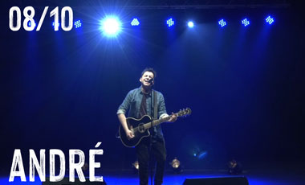

NUESTRA CULTURA
Entendemos la cultura como un derecho fundamental para la construcción de una mejor sociedad, en la que las oportunidades de desarrollo, educación y formación no se encuentren sujetas al devenir del mercado. Muy por el contrario, consideramos imprescindible el facilitar un acceso equitativo a los bienes y servicios culturales, entendiendo que la creación de ciudadanos y ciudadanas culturales, participativos en todas las áreas del quehacer humano es el camino de fortalecimiento de la democracia.
Garantizar este derecho, a través del cual nuestras vecinas y vecinos, aprecien y valoren las expresiones culturales, permitirá que nuestra comuna crezca equitativamente, reconociendo en todos y cada uno de ellos y ellas a seres capaces de crear cultura, libres, entusiastas, comprometidos con su comuna y territorios, liberadas sus capacidades creativas. Nuestro deber es darles el espacio para crecer y desarrollarse.
POLO CULTURAL
Centro Cultural Tío Lalo Parra
Ver más
Biblioteca Pública Javiera Carrera Verdugo
Ver más
PROGRAMACIÓN
El día 01 de octubre a partir de las 20 horas, por Facebook y Youtube tendremos la presentación de Los Brólicos en Son de Cerrillos, Programa de Fortalecimiento de la Identidad Local, co-...

El día 08 de octubre a partir de las 20 horas, por Facebook y Youtube tendremos la presentación de André en Son de Cerrillos, Programa de Fortalecimiento de la Identidad Local, co-financiado por...
El día 22 de octubre a partir de las 20 horas, por Facebook y Youtube tendremos la presentación de La Copoband en Son de Cerrillos, Programa de Fortalecimiento de la Identidad...
NOTICIAS
Estos últimos meses hemos estado abocados, junto a la consultora ASIDES, en trabajar de manera participativa en la actualización del Plan Municipal de Cultura, que si es aprobada por el Concejo Municipal, será incorporado al Plan de Desarrollo Comunal.
Un nuevo año llega a su fin y como ya es tradición, nos preparamos para realizar el cierre de Talleres Culturales 2021, en el Centro Cultural Tío Lalo Parra, este próximo 20 de noviembre, de manera presencial si lo permiten las condiciones sanitarias.
El Programa de Fortalecimiento de la Cultura Local, cofinanciado por el Ministerios de Las Culturas, Las Artes y el Patrimonio y la Asociación Cultural Municipal de Cerrillos, ha cerrado su primer ciclo de trabajo con la emisión del registro de la banda de Hardcore “Marginal”
Junto a la Mesa del Folclor de Cerrillos estamos llevando a cabo el proyecto “La Cueca Rueda por Cerrillos”, iniciativa que lleva el baile nacional a distintos espacios de la comuna.

CERRILLOS, VIDA DE BARRIOS
FERIA PERMANENTE DE ARTESANÍAS, MANUALIDADES E INDUSTRIAS CREATIVAS
ARTESANÍASEs la elaboración de piezas u objetos realizados individual o colectivamente donde pueden utilizarse herramientas y/o instrumentos predominando la ejecución manual.Ver más
MANUALIDADESDebe entenderse como aquél objeto o producto que es el resultado de un proceso de transformación manual o semindustrializado, a partir de una materia prima procesada...Ver más
INDUSTRIAS CREATIVASSe definen como los sectores cuya actividad organizada tiene como objetivo la producción, la promoción, la difusión y la comercialización de bienes, servicios y...Ver más
LAS HABICHUELAS MÁGICAS
20 páginas - 896 palabras
Ilustrado por Elisa Arguilé
Adaptado a Lenguaje Claro
1° BÁSICO
FÁBULAS DE ESOPO
20 páginas, 1.655 palabras
Ilustrado por Pilar Serrano
Adaptado a Lenguaje Claro
2° BÁSICO

DON QUIJOTE DE LA MANCHA
28 páginas, 2.828 palabras
Ilustrado por Alberto Gamón
Adaptado a Lectura Fácil
3° BÁSICO
LEYENDAS DE BÉCQUER
28 páginas, 2.786 palabras
Ilustrado por Moratha
Adaptado a Lectura Fácil
4° BÁSICO
TALLERES CULTURALES
Conoce nuestra oferta de talleres gratuitos para la comunidad.
Artes
Musicales
Artes
Literarias
Artes
Escénicas
Artes
Visuales
Artes
Manuales
Artes
Artes
Artes
Artes
Artes
REGISTRO AUDIOVISUAL
Ya hemos entregado a la comunidad, por medio de nuestro presidente, Alcalde Arturo Aguirre Gacitúa, la intervención urbana en Plaza Ana Undurraga, ubicada en 14 de...
Primer capítulo del segundo ciclo de Cerrillos Cypher. El encuentro de #Rap y #hiphop de artistas cerrillanos.
En este capítulo:
00:08 Cerriyork -...
Segundo capítulo del segundo ciclo de Cerrillos Cypher. El encuentro de #Rap y #hiphop de artistas cerrillanos.
00:09 Medios de Gracia/Ellos Quieren...